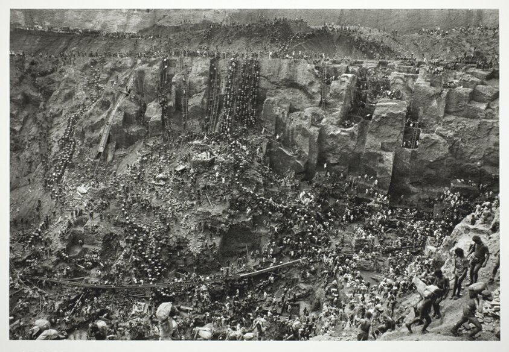

Serra Pelada, State of Pará, Brazil
Sebastião Salgado · 1986 · Gelatin silver print · 30.2 × 44.6 cm · Art Institute of Chicago
In copyright. Look and learn: shown for study, not for download.
The pit at Serra Pelada in Pará was dug by hand: miners carried sacks of ore weighing up to 60 kg up steep ramps and ladders, and at least 100,000 people were thought to be working there. By local legend, gold was first found there on a farm in December 1979; five weeks after the rush began, 10,000 people were on the property. Sebastião Salgado, forty-two, had trained as an economist, with a doctorate from the University of Paris, before he took up photography in 1973. The mine is now abandoned and its pit is a lake.